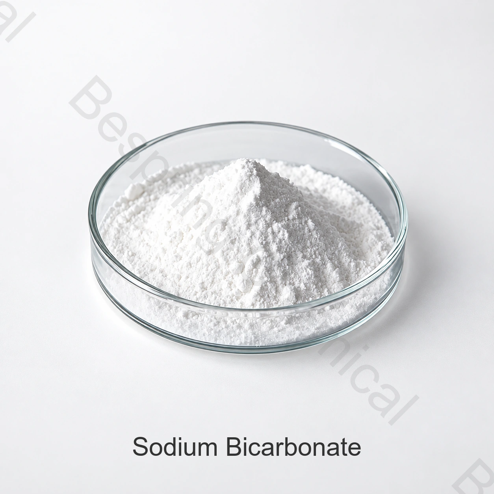

هوية المنتج والدرجة
حدّد الشكل والدرجة ونوع الحيوان وفئة العلف والكمية والتعبئة والوجهة والمستندات المطلوبة.
المكوِّنات المعدنية والعازلة؛
بيكربونات الصوديوم مصدر للصوديوم والبيكربونات في التركيبات العلفية المسموح بها، وتُقيّم لتنظيم الحموضة وتوازن الشوارد وفق كيمياء العليقة الكاملة.
حدّد الهوية والدرجة والشكل والتطبيق والكمية والتعبئة وبلد الوجهة والمستندات المطلوبة.

نبذة عن المنتج
بيكربونات الصوديوم مصدر للصوديوم والبيكربونات في التركيبات العلفية المسموح بها، وتُقيّم لتنظيم الحموضة وتوازن الشوارد وفق كيمياء العليقة الكاملة.
تُقيّم الملاءمة وفق المنتج المحدد ونوع الحيوان ومرحلته العمرية والعليقة الكاملة والغرض المقصود والقواعد السارية في سوق الوجهة. تُحدد معدلات الإضافة ضمن تقييم التركيبة.
دليل المشتريات الصناعية
استخدم معايير الشراء التالية عند مقارنة الموردين والمصنعين وعروض التوريد بالجملة.
حدّد الشكل والدرجة ونوع الحيوان وفئة العلف والكمية والتعبئة والوجهة والمستندات المطلوبة.
اطلب عرضاً يحدد المصدر والمواصفة وشروط Incoterms والوجهة وموعد التسليم المطلوب.
اذكر نوع الحيوان وفئة العلف والغرض الغذائي أو التقني وظروف الخلط والمعالجة ومعايير القبول.
قارن الهوية وطرق الاختبار وشهادة التحليل (COA) وصحيفة بيانات السلامة (SDS) والتتبع والشهادات ذات الصلة وإدارة التغييرات.
تقييم التطبيقات
تُقيّم التطبيقات وفق نوع الحيوان والعليقة الكاملة وظروف المعالجة وشروط الاستخدام في سوق الوجهة.
قيّم هذا الاستخدام وفق المواصفة الحالية والعليقة الكاملة ونوع الحيوان وظروف المعالجة ومتطلبات سوق الوجهة.
قيّم هذا الاستخدام وفق المواصفة الحالية والعليقة الكاملة ونوع الحيوان وظروف المعالجة ومتطلبات سوق الوجهة.
قيّم هذا الاستخدام وفق المواصفة الحالية والعليقة الكاملة ونوع الحيوان وظروف المعالجة ومتطلبات سوق الوجهة.
قيّم هذا الاستخدام وفق المواصفة الحالية والعليقة الكاملة ونوع الحيوان وظروف المعالجة ومتطلبات سوق الوجهة.
الاختيار التقني
حدّد متطلبات الشكل الكيميائي وحالة الإماهة في مواصفة الشراء، وقارن بيانات المصدر وطرق الاختبار باحتياجات العليقة والاستخدام المقصود.
حدّد متطلبات أساس العنصر وسياق التوافر البيولوجي في مواصفة الشراء، وقارن بيانات المصدر وطرق الاختبار باحتياجات العليقة والاستخدام المقصود.
حدّد متطلبات الملوثات وحجم الجسيمات والتدفق في مواصفة الشراء، وقارن بيانات المصدر وطرق الاختبار باحتياجات العليقة والاستخدام المقصود.
حدّد متطلبات مجموع الحدود الغذائية وقواعد المقصد في مواصفة الشراء، وقارن بيانات المصدر وطرق الاختبار باحتياجات العليقة والاستخدام المقصود.
المواصفة والمستندات
اطلب المواصفة الحالية الخاصة بالمصدر وورقة البيانات الفنية (TDS) ، مع طرق الاختبار وأساس الإبلاغ عن النتائج. قارن شهادة تحليل الدفعة بمتطلبات الشراء المتفق عليها.
اطلب المواصفة الحالية وشهادة التحليل ونشرة السلامة والمستندات الخاصة بالمصدر.
اطلب وثائق المصدر والتتبع وسلامة الأعلاف والجودة والمنشأ وموقع الإنتاج للدرجة المحددة.
الاستعراض مراجعات EFSA لإضافات الأعلاف و التوجيهمع مراجعة القواعد السارية في سوق الوجهة
مذكرة الامتثال: ولا تسمح الهوية أو الوظيفة التقنية باستخدام كل نوع من الأنواع أو فئة التغذية أو المسار أو السوق، ويجب أن يوافق الموظفون التغذويون والتنظيميون المؤهلون على شروط الاستخدام الدقيقة.
التخزين والمناولة
أسئلة المشترين
بيكربونات الصوديوم مصدر للصوديوم والبيكربونات في التركيبات العلفية المسموح بها، وتُقيّم لتنظيم الحموضة وتوازن الشوارد وفق كيمياء العليقة الكاملة.
CAS 144-55-8; NaHCO3 - في الحالات التي يغطي فيها الاسم الملح أو الهدرات أو الناقلات أو أسرة منتجة، يحدد الشكل المعروض بالضبط.
اطلب المواصفة الحالية الخاصة بالمصدر والدرجة، مع طرق التحليل وأساس النتائج وحدود القبول المتفق عليها.
اطلب ورقة البيانات الفنية (TDS) وصحيفة بيانات السلامة (SDS) وشهادة تحليل نموذجية وشهادة الدفعة والمستندات ذات الصلة بالمصدر والاستخدام.
اذكر الشكل والدرجة ونوع الحيوان وفئة العلف والغرض المقصود والكمية والتعبئة والوجهة والمتطلبات الفنية والمستندية.
الموارد ذات الصلة
استعرض المعادن العلفية والأحماض الأمينية ومُحمِّضات الأعلاف والمواد الحاملة والمغذيات الوظيفية.
يناقش المواصفات الخاصة والوثائق والعينة والمتطلبات التجارية.
تعرّف إلى خدمات التوريد ودعم التصدير للمشترين الدوليين لإضافات الأعلاف.
توريد وفق المواصفات المتفق عليها
حدّد الهوية والدرجة والشكل والتطبيق والكمية والتعبئة وبلد الوجهة والمستندات المطلوبة.